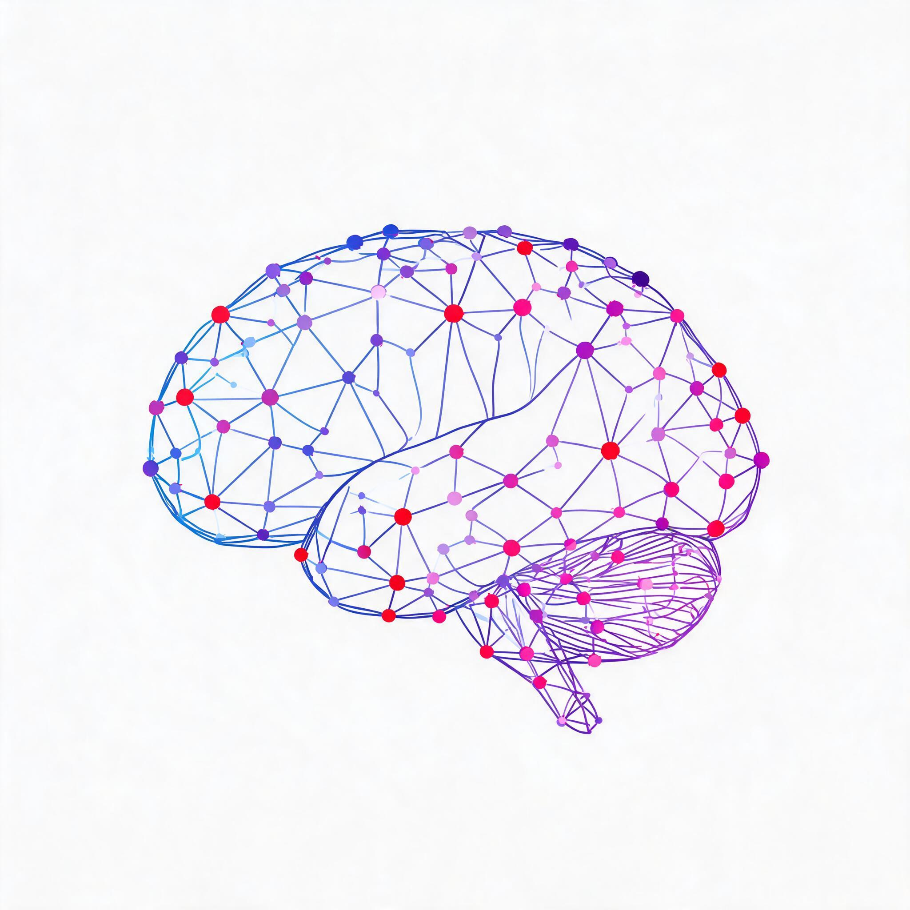

PASADHI · brain–network logo
เงาสมองที่ถักด้วยเส้นประสาท 3 มิติ · โทน ขาว–น้ำเงิน–แดง–ชมพู–ม่วง · ผลิตด้วย Seedream 5.0
สองแบบหลัก

ฉบับพื้นโปร่งใส
พาเลตต์
ขาว#FFFFFF · โหนด/ไฮไลต์
น้ำเงิน#2F6BFF · เส้นหลัก
แดง#E0344A · โหนดเน้น
ชมพู#F06BA8 · เส้นรอง
ม่วง#8B5CF6 · ไล่เฉดโครงข่าย
พื้นเข้ม#0B1020 · พื้นหลังแบบ glow
คู่มือการใช้
| การใช้งาน | ไฟล์ที่ควรใช้ | หมายเหตุ |
|---|---|---|
| เว็บ/ปกเอกสารโทนมืด | logo-dark.png | 2048×2048 |
| เอกสาร/สิ่งพิมพ์พื้นขาว | logo-light.png หรือ logo-light-transparent.png | ตัดขอบแล้ว 1415×1150 |
| วางบนสีพื้นใดก็ได้ | logo-light-transparent.png | ผ่านการตรวจ ไม่มีขอบค้าง |
| ไอคอนเล็ก | ย่อจากฉบับโปร่งใส | อ่านเป็นสมองได้ถึง 120 px — ที่ 64 px จะเลือน ถ้าต้องใช้ favicon ควรทำสัญลักษณ์ย่อย (โหนดเดี่ยว + เส้น 3 เส้น) แยก |
ไฟล์ทั้งหมด
| ไฟล์ | ขนาด | สถานะ |
|---|---|---|
logo-dark.png | 2048×2048 | ต้นฉบับ พื้นเข้ม |
logo-light.png | 2048×2048 | ต้นฉบับ พื้นขาว |
logo-light-transparent.png | 1415×1150 | พื้นโปร่งใส · สะอาด |
logo-dark-transparent-3.png | 1179×956 | พื้นโปร่งใส · ใช้บนพื้นเข้มเท่านั้น |
logo-dark-transparent{,-2}.png | — | ผลลองตัดพื้นรอบ 1–2 เก็บไว้ให้ตรวจ |